A
Virtuoso Visualization and Analysis XL Tool Environment Variables
The variables and values that specify the basic behavior of the components of the Virtuoso Visualization and Analysis XL are part of the .cdsenv file. For information about the order in which the tool reads the .cdsenv file, see Creating the .cdsenv File in Chapter 10 of the Cadence Design FrameworkII User Guide.
This appendix describes the Virtuoso Visualization and Analysis XL tool variables in the .cdsenv file. In each entry, the first column is the tool, the second column is the variable, the third column is the data type, and the fourth column contains the value to be used.
In the SKILL mode, you can use the envGetVal and envSetVal functions to retrieve and set the .cdsenv variables in the CIW. For more information on the CIW or the envGetVal and envSetVal functions, see Chapter 2 in the Cadence User Interface SKILL Functions Reference.
envSetVal settings work for the expressions that are plotted from ADE or from Virtuoso Visualization and Analysis XL when opened in the stand-alone mode. These settings also work for the signals that are plotted when Virtuoso Visualization and Analysis XL is opened in the stand-alone mode. On the other hand, the signals plotted from ADE follow the display.drf settings.The environment variables for Results Browser and Calculator are included in the .cdsenv file at the following location:
./tools.lnx86/dfII/samples/wavescan/.cdsenv
The environment variables for graph are included in the .cdsenv file at the following location:
./tools.lnx86/dfII/samples/viva/.cdsenv
This chapter includes the following sections that decsribes the environement variable for Virtuoso Visualization and Analysis XL:
Graph Variables
This section describes the environment variables that are used to set the graph properties:
- Font String
- Graph Frame Variables
- Graph Environment Variables
- Rectangular Graphs Environment Variables
- Strip Environment Variables
- Digital Strip Environment Variables
- Circular Graph Environment Variables
- Axis Environment Variables
- Dependent Axis Environment Variables
- Independent Axis Environment Variables
- String Independent Axis Environment Variables
- Trace Environment Variables
- Trace Legend Environment Variables
- Digital Trace Environment Variables
- Digital Bus Trace Environment Variables
- Histogram Environment Variables
- Horizontal Marker Environment Variables
- Reference Line Marker Environment Variables
- Vertical Marker Environment Variables
- Point Marker Environment Variables
- Reference Point Marker Environment Variables
- Specification Marker Environment Variables
- Intercept Marker Environment Variables
- Circle Marker Environment Variables
- Delta Marker Environment Variables
- Graph Label Environment Variables
- Probe Environment Variables
- Polar Grid Environment Variables
- Smith Grid Environment Variables
- Application Environment Variables
Font String
The font values for Virtuoso Visualization and Analysis XL is displayed in the following format:
The various fields in the font string are as follows:
<Font family>, <Point size>, <Pixel size>, <Style hint>, <Weight>, <Style>, <Underline>, <Strikeout>, <Fixed pitch>, <Raw mode>
Point size—Specifies point size of the font. If the font size is specified using pixels, it should be -1.
Pixel size—Specifies pixel size of the font. The font size value is -1 if it is specified using pixels. The pixel size makes the font device dependent. If you want to set the size of the font in a device independent You can use Point size to set the size of the font in a device independent manner.
Style hint—Specifies the style hint that is used by the font matching algorithm to find an appropriate default family if a selected font family is not available in the system. Style hints are not supported on X11 since this information is not provided by the window system. The value of '5' represents the enumeration:
QFont—Any Style. Any value other than 5 is ignored on X11 based systems, which means on(i.e., essentially on most unix systems).
Weight—Weighting scale for font rendering, which ranges from 0 to 99. This is similar to the scales used in Windows or CSS. A weight of 0 is ultralight and 99 is black.
Following values can be used for this aspect:
| Enumeration | Value |
|---|---|
Style—This aspect describes the different styles of glyphs that are used to display text. Following values are supported for this aspect:
| Enumeration | Value | Description |
|---|---|---|
|
Italic glyph that are typically based on the graphs with no style. However, these glyphs are not fine-tuned for representing italicized text. |
Underline—Set the value to 1 if you want to underline the text. Set the value to 0 if you do not want to underline the text.
Strikeout—Set the value to 1 if you want to strikeout the text. Set the value to 0 if you do not want to strikeout the text.
Fixed pitch—Set the value to 1 if you want to set the for the fixed pitch preference. Set the value to 0 if you do not want to set the fixed pitch.
Raw mode—Set the value to 1 if you want to use raw mode for font name matching. Otherwise, set the value to 0. This option is applicable only for the X11 systems. If the raw mode is enabled, the X font with a complete font name that matches with the family name is searched and all other values set for QFont are ignored. If the font name matches multiple fonts, the first font returned by X window system is used.
envSetVal command, you first need to load the viva context before setting the variable. For this, you can add the following command in your .cdsinit file:loadContext(strcat(prependInstallPath("etc/context/") "viva.cxt"))
callInitProc("viva")
Now, you can use the envSetVal command to set the font variable in the .cdsinit file.
Graph Frame Variables
-
viva.graphFrame width string "1000" -
viva.graphFrame height string "800" -
viva.graphFrame autoTraceSelect string "true" -
viva.graphFrame rightMouseZoom string "false" -
viva.graphFrame selectBySweep string "false" -
viva.graphFrame useSplitter string "true" -
viva.graphFrame title string "Window" - viva.graphFrame graphMinWidth string "200"
- viva.graphFrame graphMinHeight string "140"
- viva.graphFrame graphLayoutType string "Auto"
-
viva.graphFrame useSpacer string "true" - viva.graphFrame background string "black"
- viva.graphFrame useGradient string "false"
width
Controls the width of the Graph Window.
Syntax
viva.graphFrame width string "width_pixels"
Values
Example
viva.graphFrame width string "1000"
height
Controls the height of the Graph Window.
Syntax
viva.graphFrame height string "height_pixels"
Values
Example
viva.graphFrame height string "800"
autoTraceSelect
Specifies whether the tool selects the trace closest to the system cursor.
Syntax
viva.graphFrame autoTraceSelect string "true" | "false"
Values
|
The tool automatically selects the trace closest to the system cursor. This is the default value. |
|
Example
viva.graphFrame autoTraceSelect string "true"
rightMouseZoom
Specifies whether you can use the right mouse button to zoom your graph.
Syntax
viva.graphFrame rightMouseZoom string "true" | "false"
Values
|
Use the right mouse button to zoom your graph.This is the default value. |
|
|
Use the middle mouse button to zoom your graph. This enables the right mouse pop-up menu in the Graph Window. |
Example
viva.graphFrame rightMouseZoom string "false"
selectBySweep
Specifies whether traces from parametric sweeps are selected by family or by individual leaf.
Syntax
viva.graphFrame selectBySweep string "true" | "false"
Values
|
The Trace – Select by Family command is not selected. This is the default value. |
Example
viva.graphFrame selectBySweep string "false"
useSplitter
Syntax
viva.graphFrame useSplitter string "true" | "false"
Values
Example
viva.graphFrame useSplitter string "true"
title
Specifies the title of the graph window.
viva.graphFrame title string "window_title"
Values
Example
viva.graphFrame title string "Window"
graphLayoutType
Specifies the subwindow display layout type of the graph window.
viva.graphFrame graphLayoutType string "Auto"
Default Value
Valid Values
useSpacer
Adds an empty spacer widget to make the number of open subwindows even.
viva.graphFrame useSpacer 'string " true"
Default Value
Valid Values
-
true—Adds an empty spacer widget. -
false—Restores the legacy behavior of not adding an empty spacer widget.
background
Controls the background color of the window/subwindow.
viva.graphFrame background 'string "color_value"
Default Value
|
Valid values: A valid color name, Hex color code, or HTML color code. |
Example
viva.graphFrame background string "black"
viva.graphFrame background string "#FFFFFF"
useGradient
Specifies whether the subwindow uses gradient color in the background.
viva.graphFrame useGradient 'string "true" | "false"
Default Value
Valid Values
-
true—Enables gradient in the subwindow background. -
false—Disables gradient in the subwindow background.
Example
viva.graphFrame useGradient string "false"
Graph Environment Variables
-
viva.graphtitleFontstring "Default,10,-1,5,50,0,0,0,0,0" -
viva.graphsubTitlestring "" -
viva.graphdisplayDate string "true" -
viva.graphuseDefaultTitle string "true" -
viva.graphdefaultSubtitle string "true" -
viva.graphtraceMarkerOnstring "true" -
viva.graph traceMarkerSignificantDigits string "4" - viva.graph traceMarkerSigDigitsMode string "Auto"
-
viva.graphsnapOn string "snapOff"
The other valid value forSnapOnenvironment variable is:snapToData. -
viva.graph selectByFamily string "false" -
viva.graph useCurrentContext string "true" -
viva.graph colorByParameter string "trace" -
viva.graph symbolByParameter string "family" -
viva.graph stripByParameter string "VDD" -
viva.graph colorBank string "default"
You can use this variable to customize the set of trace colors in a Virtuoso Visualization and Analysis XL session. The default value of this environment variable is the default color bank that is specified in thedisplay.drffile.This variable does not change the colors defined in theThe color names should be separated by a comma, a semicolon, or a space. The color name can be a list of colors defined in the SVG color keyword, such as steelblue, azzure, or the RGB hexadecimal value of the color in thedisplay.drffile. Also, when you plot simulation results from ADE, the color bank from thedisplay.drffile is honored.#RRGGBBformat.
viva.graph colorBank string "red; blue; green; yellow"
viva.graph colorBank string "#ff0000, #0000ff, #008000, #ffff00"
You can specify any number of colors names using this variable. However, it is recommended that you should not specify more than 18 colors because lot of colors might lead to confusion.
The legal color name and corresponding RGB value is listed at the following link:
http://www.w3.org/TR/SVG/types.html#ColorKeywords -
titleDisplayMode
Determines how the graph title is to be wrapped around if it exceeds the space available on the graph.
viva.graph titleDisplayMode string "elideMiddle"
Default value:elideMiddle
Valid Values: -
reloadSingleStyle: -
undoStackSize
Specifies the maximum number of commands that can be undone in the graph window.
viva.graph undoStackSize string "30"envSetVal("viva.graph" "undoStackSize" 'string "30") -
enableDirectMeasurementAssistant
-
dimOnSelection
Specifies whether to dim the unselected traces in a graph window or subwindow.
viva.graph dimOnSelection string "true"envSetVal("viva.graph" "dimOnSelection" 'string "true")
Rectangular Graphs Environment Variables
-
viva.rectGraph useGradient string "false" -
viva.rectGraph traceMarkerDisplay string "(%X, %Y)" -
viva.rectGraph referenceLinesOn string "true" -
viva.rectGraph enableEdgeMeasurement string "false" -
viva.rectGraph legendPosition string "left" -
viva.rectGraph eyeDiagramLegendPosition string "above"
The defalt trace legend position for an eye diagram is at the top of the plot. When you specify thelegendPositionoption asleft, the trace legend is displayed on the left of the graph. To move the trace legend inside the graph, specifyinside. -
viva.rectGraph showDeltaChildLabels string "false"
When you set this variable tofalse, the labels are not displayed for the point markers that are part of a delta marker. -
viva.rectGraph showZoomBar string "false"
When this variable is set tofalse, the zoom bar is not displayed on graph. To display the zoom bar, set this variable totrue. -
envSetVal("viva.rectGraph" "showEdgeBrowser" 'string "true")
When this variable is set tofalse, the Edge Browser is not displayed on the graph. This works only if theenableEdgeMeasurementenvironment variable is set totrue.
Strip Environment Variables
-
viva.rectGraph stripChartOn 'string "true"
When you set this variable, all the new signals are plotted in a new strip. -
viva.rectGraphstripChartOn string "false" -
viva.rectGraphstripByFamilystring "false" -
viva.rectGraphstripHeight string "50" -
viva.rectGraphminStripHeightstring "32" -
viva.rectGraphactiveStripCuestring "Vertical Bar" -
viva.rectGraphactiveStripCueColor string "yellow"
Digital Strip Environment Variables
-
viva.rectGraphdigitalStripHeightstring "32" -
viva.rectGraphmaxDigitalStripHeight string "40" -
viva.rectGraphminDigitalStripHeight string "32"
Circular Graph Environment Variables
-
viva.circGraphuseGradient string "false" -
viva.circGraphgridTypestring "Polar" -
viva.circGraphtraceMarkerDisplay string "(R=%R, I=%I) (M=%M, P=%P)" -
viva.circGraph characteristicImpedance string "50" -
viva.circGraph normalizeSmithValues string "true" -
viva.circGraph plotToSmithView string "false"
This variable affects the initial plotting of a Smith Chart. By default, this variable is set tofalse, which means that the Smith chart fits to data when opened for the first time. If you set this variable totrue, the Smith chart is fitted to the extent of the standard Smith grid. If a compressed Smith grid is required to show data, the initial plot shows the full extent of the compressed Smith regardless of the value ofviva.circGraph.plotToSmithViewvariable. -
viva.circGraph traceMarkerAlwaysVisible string "false"
ThetraceMarkerDisplayenvironment variable is used to display values for the tracking marker (trace marker). The following formats are supported to display the trace marker values:-
%C—Displays the real and imaginary cartesian values -
%Z—Displays the impedance values, such as resistance and reactance -
%A—Displays the admittance values, such as conductance and susceptance -
%R—Displays the reflection coefficients, such as mag and angle -
%P—Displays the polar values, such as mag and angle -
%F—Displays the frequency value, which includes the independent axis data
-
-
viva.circGraph flexibleAxis string "false"
Determines whether the circular graphs with different dependent axes can be plotted in the same window. When set tofalse(default value), graphs with matching axis units can only be plotted in the same window. In case you use the drag operation, a new window is created. When this variable is set totrue, graphs with different axis units can be plotted together in the same window. -
viva.circGraph legendPosition string "above"
Axis Environment Variables
-
viva.axismajorGridsOnstring "true" -
viva.axisminorGridsOnstring "true" -
viva.axismajorGridForeground string "gray" -
viva.axisminorGridForeground string "lightGray" -
viva.axisautoAxisColorstring "true" -
viva.axisforegroundstring "white" -
viva.axisbackgroundstring "black" -
viva.axisfontstring "Default,10,-1,5,50,0,0,0,0,0" -
viva.axismajorTicsOn string "true" -
viva.axisminorTicsOn string "true"
Dependent Axis Environment Variables
-
viva.depAxis baseAndToplineReferenceHint string "0.0,5.0" - viva.depAxis threshold string "20,80"
-
viva.depAxis logScale string "false" -
viva.depAxis forceOrigin string "false" -
viva.depAxis notation string "suffix" -
viva.depAxis showUnits string "true"
TheshowUnitsvariable is used to show or hide the units on the Y-axis -
viva.depAxis flexible string "false"
Specifies whether a new trace is to be plotted in an existing window or subwindow that share the same Y-axis units with the trace being appended.
When this variable is set tofalse, which is the default value, and if the Y-axis units of the existing trace do not match with the corresponding X-axis units of the trace being appended, a new Y-axis is added to display the .
When this variable is set totrue, the new trace is appended to the existing graph irrespective of the Y-axis units.
For example, consider the waveforms for the two signals shown in the figure below, /OUT and /V0/PLUS. These waveforms have same X-axis, but Y-axes are different.
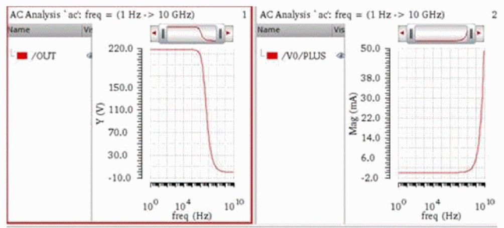If the variable is set to false and you combine the two waveforms, a new Y-axis is added to the right. In the figure below, two Y-axes are shown for Mag (V) and Mag (mA).
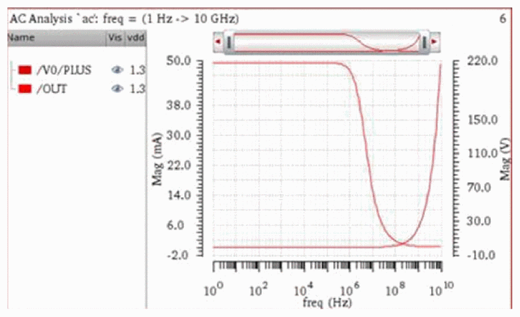If the variable is set to true, and you combine the two waveforms, one Y-axisY(*)is used.
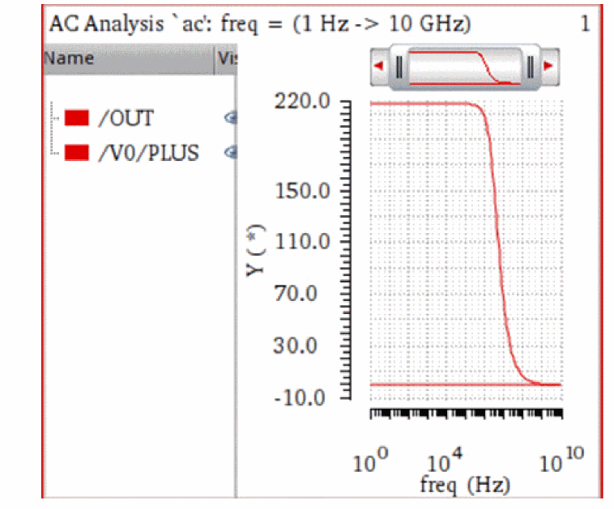 -
viva.depAxis labelAngle string "0"
labelAngle
Specifies the angle through which labels of the dependent axis are rotated.
viva.depAxis labelAngle string "0" |
||
envSetVal("viva.depAxis" "labelAngle" 'string "0")
|
||
"0" |
||
Independent Axis Environment Variables
-
viva.indepAxis logScale string "false" -
viva.indepAxis forceOrigin string "false" -
viva.indepAxis notation string "suffix" -
viva.indepAxis showUnits string "true"
TheshowUnitsvariable is used to show or hide the units on the X-axis. -
viva.indepAxis flexible string "false"
Specifies whether a new trace is to be plotted in a new window or subwindow or in an existing window or subwindow based on the X-axes units.
When this variable is set tofalse, which is the default value, and if the X-axis units of the existing trace do not match with the corresponding X-axis units of the trace being appended, the new trace is plotted in a new window. In addition, if you drag trace from one graph to another, an icon appears that prevents the traces to be appended.
When this variable is set totrue, the new trace is appended to the existing graph irrespective of the X-axis units.
For example, consider the following traces with different X-axis units,freq(Hz)andtime(ns):
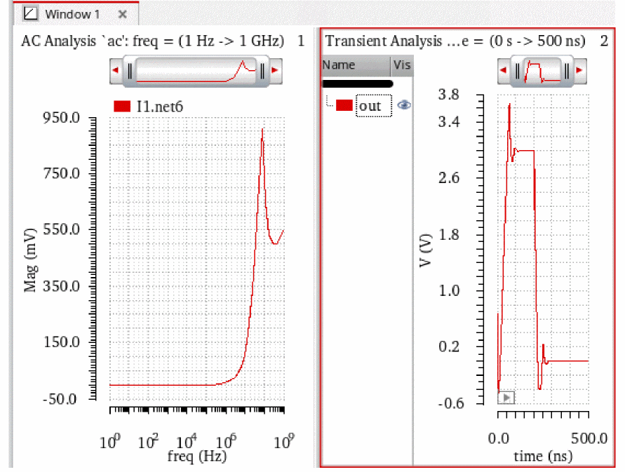Now, if this variable is set tofalse, these traces will be plotted in different subwindows even if the plotting mode is set to append, and you cannot move them together because their X-axes are not the same.
On the other hand, if you set the variable totrue, these traces will be plotted in one subwindow irrespective of the different X-axes values, given that the plotting mode is append.
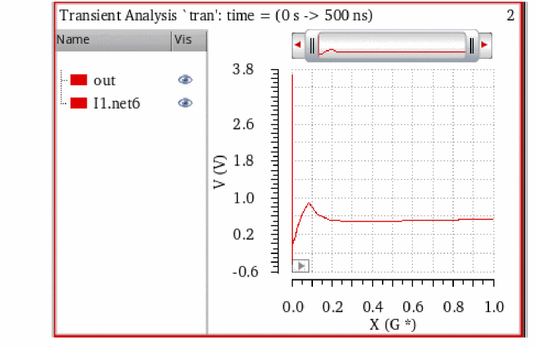Notice that X-axis unit label changes toX(G*)indicating that the two X-axes are combined. -
viva.indepAxis sameName string "false"
When this variable is set totrue, a new trace is plotted in a new window or subwindow if the X-axis units and name of the active graph do not match with the corresponding X-axis units and name of the graph being appended. When set tofalse, the new trace is appended to the active graph irrespective of the unit names. By default, this variable is set tofalse.
For example, the figures below show how this environment variable works for signals with different X-axis names,X_AxisandX_Axis_1, respectively.
When set tofalse, both the signals are plotted in the active window irrespective of the X-axis units and names.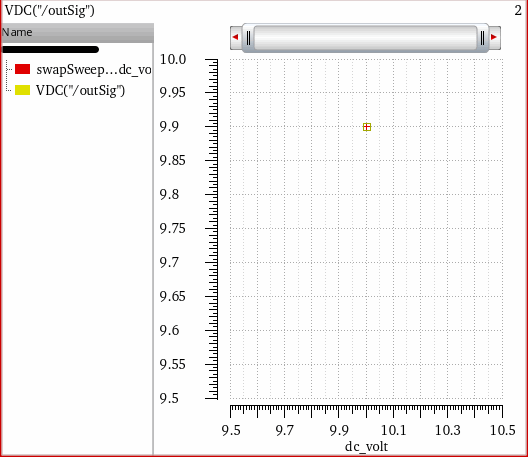When set totrue, the signals are plotted in different subwindows because the X-axis names are different.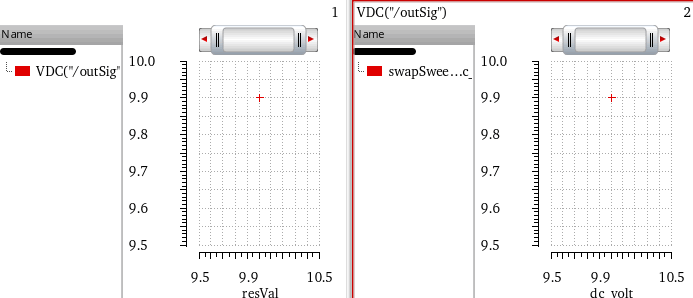 -
viva.indepAxis labelAngle string "0"
labelAngle
Specifies the angle through which labels of the independent axis are rotated.
viva.indepAxis labelAngle string "0" |
||
envSetVal("viva.indepAxis" "labelAngle" 'string "0")
|
||
"0" |
||
String Independent Axis Environment Variables
-
viva.stringIndepAxis traceStyle string "points"
This variable controls the default line style for X-axis with strings or corners.
Trace Environment Variables
-
viva.tracehiliteColor string "lime" -
viva.traceuseGlowstring "false" -
viva.tracelineThicknessstring "fine" -
viva.tracelineStylestring "solid" -
viva.tracedepModifierstring "Magnitude" -
viva.traceindepModifierstring "Magnitude" -
viva.tracesymbolsOnstring "false" -
viva.tracesymbolStyle string "plus" -
viva.tracetoplineOnstring "true" -
viva.tracemidlineOnstring "true" -
viva.tracebaselineOnstring "true" -
viva.tracedToAHiVoltage string "5.0" -
viva.tracedToALoVoltagestring "0.0" -
viva.tracedToAXVoltagestring "(vhi + vlo)/2" -
viva.tracedToAUnitstring "V" -
viva.traceautoReferenceLinesstring "true" -
viva.trace baseAndtoplineReferenceHintstring "5.0" -
viva.tracethresholdstring "20_80"
Trace Legend Environment Variables
showVisColumn
Controls the display of the column containing the visibility buttons for each signal plotted on the graph.
Syntax
viva.traceLegend showVisColumn string "true"
Default Value
Valid Values
font
Sets the font for the trace legend.
Syntax
viva.traceLegend font string ""
Default Value
Valid values
viva.traceLegend font string "Default,18,-1,5,55,0,0,0,0,0"
For more details, see Font String.
printSaveImageFont
Sets the font for saving and printing the graph image.
Syntax
viva.traceLegend printSaveImageFont string ""
Default Value
Valid Values
For more details, see Font String.
showTraceTooltips
Determines whether to display tooltips when you move the mouse pointer over trace names in the trace legend.
Syntax
viva.traceLegend showTraceTooltips string "true"
Default Value
Valid Values
-
true—Tooltips are displayed when you move mouse pointer over trace names in the trace legend. -
nil—No tooltips are displayed when you move mouse pointer over trace names in the trace legend.
Digital Trace Environment Variables
Digital Bus Trace Environment Variables
Histogram Environment Variables
-
viva.histogramTrace densityEstimator string "true"
Plots a curve that estimates the distribution concentration. By default, this variable is set totrue. -
viva.histogramTrace deviationLines string "true"
Shows the standard deviation lines in the graph indicating the mean, (mean - standard deviation), and (mean + standard deviation) values. The standard deviation is a sample standard deviation. By default, this variable is set totrue. -
viva.histogramTrace yieldLines string "false"
Shows the markers associated with the histogram. By default, this variable is set tofalse. -
viva.histogramTrace maxPoints string "10000"
Controls the maximum number of Histogram points that are to be displayed in the plot. By default, this variable is set to1000. -
viva.histogramTrace combinedLegendPosition string "left"
Controls the position of the trace legend. The default position when plotting combined histograms is at the left. To move the trace legend inside the graph, specifyinside. To move the trace legend to be displayed at the top of each strip, specifyabove.
Horizontal Marker Environment Variables
This section describes the environment variables for horizontal marker:
font
Specifies the font of the horizontal marker.
viva.horizMarker font string "Default,10,-1,5,50,0,0,0,0,0"
See Font String.
notation
Specifies the notation of the horizontal marker.
Syntax
viva.horizMarker notation string " suffix"
Default Value
Valid Values
defaultLabel
Specifies the default label of the horizontal marker.
Syntax
viva.horizMarker defaultLabel string "%M"
Default Value
Valid Values
For information about valid values, see Adding a Point Marker.
foreground
Specifies the foreground color of the horizontal marker.
Syntax
viva.vertMarker foreground string "black"
Default Value
Valid Values
All the values defined at the following location:
interceptStyle
Specifies the intercept style of the horizontal marker. This variable also controls the visibility of axes intercepts.
Syntax
viva.horizMarker interceptStyle string "OnWhenHover"
Default Value
|
Displays the intercepts when you hover mouse pointer on the horizontal marker. |
Valid Values
-
On: Always displays intercepts on the horizontal marker. -
Off: Does not display intercepts on the horizontal marker.
lineStyle
Specifies the line style of the horizontal marker.
Syntax
viva.horizMarker lineStyle string "dash"
Default Value
Valid Values
significantDigits
Specifies the significant digits for the horizontal marker.
Default value
Valid Values
sigDigitsMode
Sets the mode to be used to specify significant digits. When this variable is set to Manual, the settings defined in the significantDigits variable is applied. When it is set to Auto, the default value for significantDigits is used.
viva.horizMarker sigDigitsMode string "Auto"
Default Value
Valid Values
snapPoint
Specifies the snap data point of the horizontal marker.
Syntax
viva.horizMarker snapPoint string "Data Point"
Default Value
Data Point: Shifts the marker to a specific data point on the curve.
Valid Values
-
Local Maxima: Shifts the marker to the maxima value (peak) local to the curve. -
Local Minima:Shifts the marker to the minima value local to the curve. -
Local Max or Min:Shifts the marker to either maxima or minima value local to the curve. -
Specific Y value:Shifts the marker to a specific Y-axis value. -
Specific X value:Shifts the marker to a specific X-axis value. -
Global Maxima: Shifts the marker to the maxima value (peak) global to the curve. -
Global Minima: Shifts the marker to the minima value global to the curve.
Reference Line Marker Environment Variables
This section describes the environment variables for reference line marker:
font
Specifies the font of the Reference Line marker.
viva.referenceLineMarker font string "Default,10,-1,5,50,0,0,0,0,0"
See Font String.
interceptStyle
Specifies the intercept style of the reference line marker.
Syntax
viva.referenceLineMarker interceptStyle string "off"
Valid Values
-
off:Turns off the intercepts on the reference line marker. This is the default value. -
on:Turns on the intercepts on the reference line marker.
lineStyle
Specifies the line style of the reference line marker.
Syntax
viva.referenceLineMarker lineStyle string "Dot"
Default Value
foreground
Specifies the foreground color of the reference line marker.
Syntax
viva.referenceLineMarker foreground string "aquamarine"
Default Value
All the values defined at the following location:
defaultLabel
Specifies the default label of the vertical marker.
Syntax
viva.referenceLineMarker defaultLabel string "%Y"
Default Value
Valid Values
For information about valid values, see Adding a Point Marker.
significantDigits
Specifies the significant digits for the reference line marker.
Default value
Valid Values
sigDigitsMode
Sets the mode to be used to specify significant digits. When this variable is set to Manual, the settings defined in the significantDigits variable is applied. When it is set to Auto, the default value for significantDigits is used.
viva.referenceLineMarker sigDigitsMode string "Auto"
Default Value
Valid Values
Vertical Marker Environment Variables
This section describes the environment variables for vertical marker:
- font
- notation
- defaultLabel
-
foreground - interceptStyle
- lineStyle
- significantDigits
- sigDigitsMode
- snapPoint
font
Specifies the font of the Vertical marker.
viva.vertMarker font string "Default,10,-1,5,50,0,0,0,0,0"
See Font String.
notation
Specifies the notation of the vertical marker.
Syntax
viva.vertMarker notation string " suffix"
Default Value
Valid Values
defaultLabel
Specifies the default label of the vertical marker.
Syntax
viva.vertMarker defaultLabel string "%M"
Default Value
Valid Values
For information about valid values, see Adding a Point Marker.
foreground
Specifies the foreground color of the vertical marker.
Syntax
viva.vertMarker foreground string "black"
Default Value
Valid Values
All the values defined at the following location:
interceptStyle
Specifies the intercept style of the vertical marker. This variable also controls the visibility of axes intercepts.
Syntax
viva.vertMarker interceptStyle string "OnWhenHover"
Default Value
OnWhenHover: Displays the intercepts when you hover mouse pointer on the vertical marker.
Valid Values
-
OnAlways displays intercepts on the vertical marker. -
OffDoes not display intercepts on the vertical marker.
lineStyle
Specifies the line style of the vertical marker.
Syntax
viva.vertMarker lineStyle string "dash"
Default Value
Valid Values
significantDigits
Specifies the significant digits for the vertical marker.
Default value
Valid Values
sigDigitsMode
Sets the mode to be used to specify significant digits. When this variable is set to Manual, the settings defined in the significantDigits variable is applied. When it is set to Auto, the default value for significantDigits is used.
viva.vertMarker sigDigitsMode string "Auto"
Default Value
Valid Values
snapPoint
Specifies the snap data point of the vertical marker.
Syntax
viva.vertMarker snapPoint string "Data Point"
Default Value
Data Point: Shifts the marker to a specific data point on the curve.
Valid Values
-
Local Maxima:Shifts the marker to the maxima value (peak) local to the curve. -
Local Minima:Shifts the marker to the minima value (peak) local to the curve. -
Local Max or Min:Shifts the marker to either maxima or minima value local to the curve. -
Specific Y value:Shifts the marker to a specified Y value. -
Specific X valueShifts the marker to a specific X-axis value. -
Global Maxima:Shifts the marker to the maxima value (peak) global to the curve. -
Global Minima:Shifts the marker to the minima value global to the curve.
Point Marker Environment Variables
This section describes the environment variables for point marker:
- font
- notation
- defaultLabel
-
foreground - significantDigits
- sigDigitsMode
- snapPoint
- drawCrossHairs
- circDefaultLabel
font
Specifies the font of the point marker.
viva.pointMarker font string "Default,10,-1,5,50,0,0,0,0,0"
See Font String.
notation
Specifies the notation of the point marker.
Syntax
viva.pointMarker notation string "suffix"
Default Value
Valid Values
defaultLabel
Specifies the default label of the point marker.
Syntax
viva.pointMarker defaultLabel string "%M: %X %Y %D"
Default Value
-
%M—Name of the point marker -
%X—X-axis coordinates -
%Y—Y-axis coordinates -
%D—Absolute path to the results directory from where the signal is plotted
Valid Values
For information about valid values, see Adding a Point Marker.
foreground
Specifies the foreground color of the point marker.
Syntax
viva.pointMarker foreground string "black"
Default Value
Valid Values
All the values defined at the following location:
significantDigits
Specifies the significant digits for the point marker.
Default value
Valid Values
sigDigitsMode
Sets the mode to be used to specify significant digits. When this variable is set to Manual, the settings defined in the significantDigits variable is applied. When it is set to Auto, the default value for significantDigits is used.
viva.pointMarker sigDigitsMode string "Auto"
Default Value
Valid Values
snapPoint
Specifies the snap point of the point marker.
Syntax
viva.pointMarker snapPoint string "Data Point"
Default Value
Data Point Shifts the marker to a specific data point on the curve.
Valid Values
-
Local Maxima:Shifts the marker to the maxima value (peak) local to the curve. -
Local Minima: Shifts the marker to the minima value (peak) local to the curve. -
Local Max or Min: Shifts the marker to either maxima or minima value local to the curve. -
Specific Y value: Shifts the marker to a specified Y value. -
Specific X value: Shifts the marker to a specific X-axis value. -
Global Maxima:Shifts the marker to the maxima value (peak) global to the curve. -
Global Minima:Shifts the marker to the minima value global to the curve.
drawCrossHairs
Specifies whether to display the X and Y intercepts for point markers in the graph.
Syntax
viva.pointMarker drawCrossHairs string "Dynamic"
Default Value
Valid Values
circDefaultLabel
Specifies the default label of the point marker.
Syntax
viva.pointMarker circDefaultLabel string "%M: %C (%F)"
Default Value
Valid Values
For information about all the valid values, see Adding a Point Marker.
Reference Point Marker Environment Variables
This section describes the environment variables for reference point marker:
- font
- notation
- foreground
- defaultLabel
- circDefaultLabel
- drawCrossHairs
- significantDigits
- sigDigitsMode
font
Specifies the font of the reference point marker.
viva.refPointMarker font string "Default,10,-1,5,50,0,0,0,0,0"
See Font String.
notation
Specifies the notation of the reference point marker.
Syntax
viva.refPointMarker notation string "suffix"
Default Value
Valid Values
foreground
Specifies the foreground color of the reference point marker.
Syntax
viva.refPointMarker foreground string "black"
Default Value
Valid Values
All the values defined at the following location:
defaultLabel
Specifies the default label of the reference point marker.
Syntax
viva.refPointMarker defaultLabel string "%X %Y"
Default Value
Valid Values
For information about valid values, see Adding a Point Marker.
circDefaultLabel
Specifies the circular default label of the reference point marker.
Syntax
viva.refPointMarker circDefaultLabel string "%C (%F)"
Default Value
Valid Values
For information about valid values, see Adding a Point Marker.
drawCrossHairs
Specifies whether to display the X and Y intercepts for reference point markers in the graph.
Syntax
viva.refPointMarker drawCrossHairs string "Dynamic"
Default Value
Valid Values
significantDigits
Specifies the significant digits for the reference point marker.
Default value
Valid Values
sigDigitsMode
Sets the mode to be used to specify significant digits. When this variable is set to Manual, the settings defined in the significantDigits variable is applied. When it is set to Auto, the default value for significantDigits is used.
viva.refPointMarker sigDigitsMode string "Auto"
Default Value
Valid Values
Specification Marker Environment Variables
This section describes the environment variables for specification marker:
- font
- passcolor
- failcolor
- lineStyle
- lineThickness
- lineColor
- displayMode
- significantDigits
- showLabel
- rule
- type
- visibility Mode
font
Specifies the font of the spec marker.
viva.specMarker font string "Default,10,-1,5,50,0,0,0,0,0"
See Font String.
passcolor
Specifies the color of the pass region of the spec marker.
Syntax
viva.specMarker passcolor string "#00CC00"
Valid Values
All values defined at the following location:
failcolor
Specifies the color of the fail region of the spec marker.
Syntax
viva.specMarker failcolor string "#CC0000"
Valid Values
All values defined at the following location:
Color values are specified in the #RRGGBB format. For example, the cyan color in RGB format is (0,255, 255) and in hexadecimal format, it is written as #00FFFF.
lineStyle
Specifies the line style of the spec marker.
Syntax
viva.specMarker lineStyle string "solid"
Valid Values
lineThickness
Specifies the line thickness of the spec marker.
Syntax
viva.specMarker lineThickness string "medium"
Valid Values
lineColor
Specifies the line color of the spec marker.
Syntax
viva.specMarker lineColor string "white"
Valid Values
displayMode
Specifies the spec marker region display mode of the spec marker.
Syntax
viva.specMarker displayMode string "both"
Valid Values
- none—Displays no spec marker on the graph
-
pass—Displays only pass spec marker region on the graph -
fail—Displays only fail spec marker region on the graph -
thresholdOnly—Displays threshold region on the graph
significantDigits
Specifies the significant digits for the specification marker.
Default value
Valid Values
showLabel
Displays the spec marker labels on the graph.
Syntax
viva.specMarker showLabel string "true"
rule
Sets the specifictaion type to be used for the spec marker.
Syntax
viva.specMarker rule string "range"
Valid Values
type
Specifies whether the specification type of spec waveform is drawn normally or in a sampleHold style.
Syntax
viva.specMarker type string "line"
Valid Values
visibility Mode
Specified whether to display specification markers on the graph.
Syntax
Default Value
Valid Values
Intercept Marker Environment Variables
This section describes the environment variables for Intercept marker:
foreground
Specifies the foreground color of the intercept marker.
Syntax
viva.interceptMarker foreground string "black"
Default Value
Valid Values
All the values defined at the following location:
lineStyle
Specifies the line style of the intercept edge marker.
Syntax
viva.interceptMarker lineStyle string "solid"
Default Value
Valid Values
Circle Marker Environment Variables
This section describes the environment variables for circular marker:
font
Specifies the font of the circular marker.
viva.circleMarker font string "Default,10,-1,5,50,0,0,0,0,0"
See Font String.
notation
Specifies the notation of the circular marker.
Syntax
viva.circleMarker notation string "suffix"
Default Value
Valid Values
defaultLabel
Specifies the mnemonic label for the circular markers.
Syntax
viva.circleMarker defaultLabel string "%M: %X %Y"
Default Value
Valid Values
For information about valid values, see Adding a Point Marker.
foreground
Specifies the foreground color of the circular marker.
Syntax
viva.cicleMarker foreground string "black"
Default Value
Valid Values
All the values defined at the following location:
background
Specifies the background color of the circular marker.
Syntax
viva.circleMarker background string "white"
Default Values
Valid Values
All the values defined at the following location:
Delta Marker Environment Variables
This section describes the environment variables for delta markers:
foreground
Specifies the foreground color of the delta marker.
Syntax
viva.multiDeltaMarker foreground string "black"
Default Value
Valid Values
All the values defined at the following location:
notation
Specifies the notation of the delta marker.
Syntax
viva.multiDeltaMarker notation string "suffix"
Default Value
Valid Values
showChildLabels
Shows or hides marker labels for the delta markers.
Syntax
viva.multiDeltaMarker showChildLabels string "true"
Values
-
true—Shows the labels for all markers that combine to form the delta marker. -
false—Hides the labels for all markers that combine to form the delta marker.
defaultLabel
Specifies the mnemonic label for the delta markers.
Syntax
viva.multiDeltaMarker defaultLabel string "[dx:%W] [dy:%H] [s:%S]"
Default Value
-
dx:%W—Delta value on X-axis -
dy:%H—Delta value on Y-axis -
s:%S—Slope (dy/dx)If you do not enclose these labels in parenthesisThe following table shows how values are displayed in the marker labels of a delta marker when format strings are specified with and without parenthesis,[ ], the corresponding information is displayed without suffix notations in the marker label.[].
Format String Values in the Marker Label 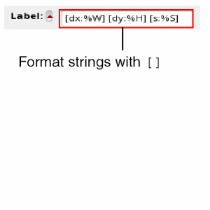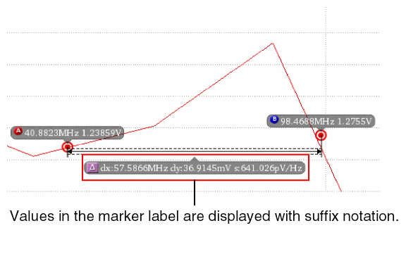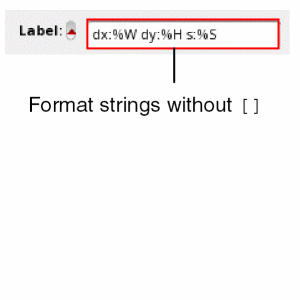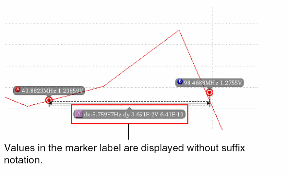
For more information about the values that you can use for marker labels, see Marker Labels.
Valid Values
For information about valid values, see Adding a Point Marker.
significantDigits
Specifies the significant digits for the delta marker.
Default value
Valid Values
sigDigitsMode
Sets the mode to be used to specify significant digits. When this variable is set to Manual, the settings defined in the significantDigits variable is applied. When it is set to Auto, the default value for significantDigits is used.
viva.multiDeltaMarker sigDigitsMode string "Auto"
Default Value
Valid Values
deltaMeasure
Determines the axis for which the delta measurement values are to be displayed in the delta marker label. Valid values of this variable include the change in X-axis value, Y-axis value, or both X- and Y-axes values. You can also use the delta marker properties form to control the display of these measurement values.
In addition, Virtuoso Visualization and Analysis XL controls the display of these measurement values depending on the markers between which the delta marker is created. For example, if a delta marker is created between two or more vertical markers, then only the change in X-axis value is displayed.
Syntax
viva.multiDeltaMarker deltaMeasure string "X Only"
Default Value
Valid Values
-
X Only—Shows the change in X-axis only.
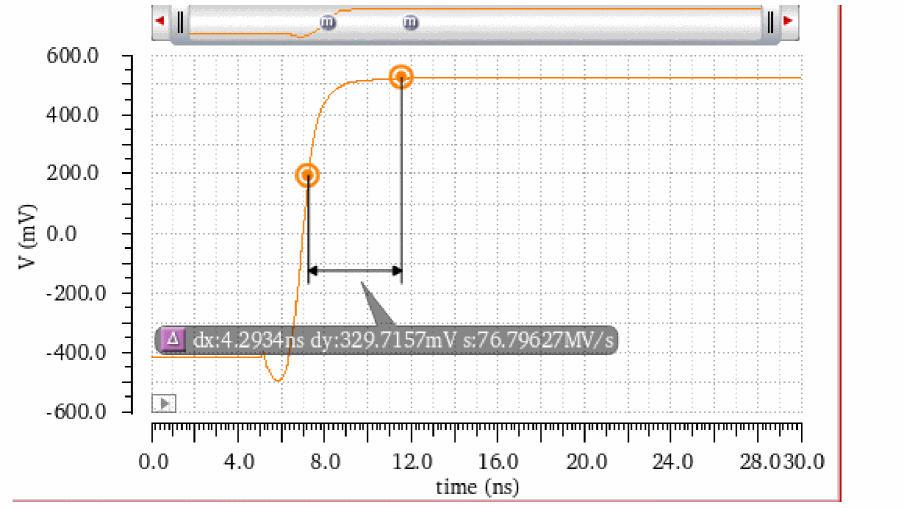 -
Y Only—Shows the change in Y-axis only.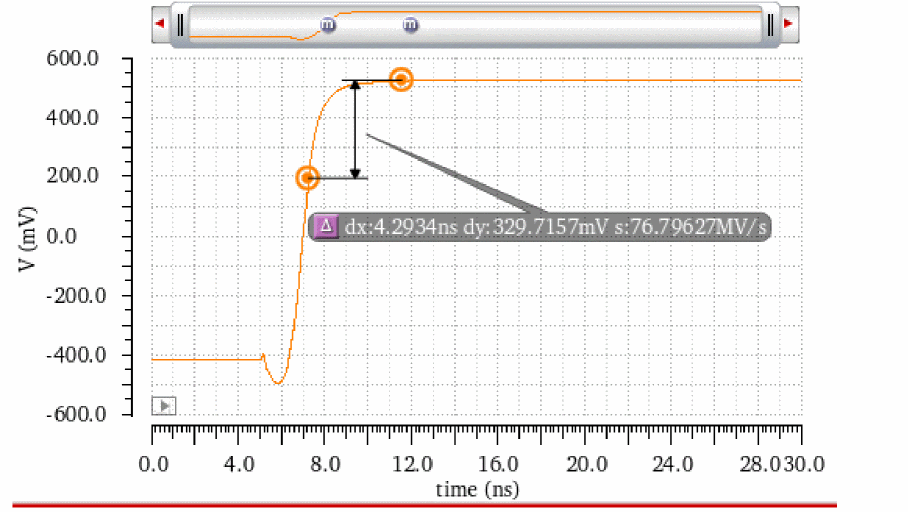 -
X and Y—Shows the change in both X- and Y-axes.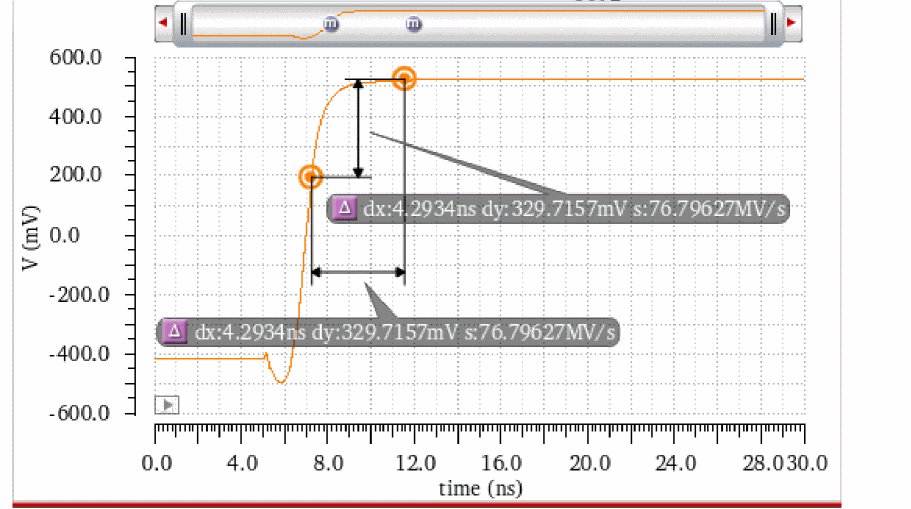
Transient Edge Markers Environment Variables
This section describes the environment variables for transient edge markers:
significantDigits
Specifies the significant digits for the transient edge marker.
Default value
Valid Values
Graph Label Environment Variables
-
viva.graphLabel font string "Default,10,-1,5,50,0,0,0,0,0" -
viva.graphLabel foreground string "white" -
viva.graphLabel background string "lightGray"
Probe Environment Variables
-
viva.probefontstringDefault,10,-1,5,50,0,0,0,0,0" -
viva.probeforegroundstring "black" -
viva.probebackground string "white" -
viva.probeautoTopBaselinestring "true" -
viva.probetopLinestring "0.0" -
viva.probebaseLinestring "0.0" -
viva.probeautoMinMaxstring "true" -
viva.probeminValue string "0.0" -
viva.probemaxValue string "0.0"
Polar Grid Environment Variables
-
viva.polarGridfontstring "Default,10,-1,5,50,0,0,0,0,0" -
viva.polarGridnumCirclesstring "4" -
viva.polarGridcirclesForeground string "gray" -
viva.polarGridcirclesOn string "true" -
viva.polarGridcirclesLabelsOn string "true" -
viva.polarGridnumRadialsstring "2" -
viva.polarGridradialsOn string "true" -
viva.polarGridradialsLabelsOn string "true"
Smith Grid Environment Variables
-
viva.smithGrid highlightUnitCircle string "true" -
viva.smithGrid showAxes string "true" -
viva.smithGrid showOrigin string "true" -
viva.smithGrid showCurves string "true" -
viva.smithGrid showMinorCurves string "true" -
viva.smithGrid font string "Default,10,-1,5,50,0,0,0,0,0" -
viva.smithGrid showPerimeterLabels string "true"
Application Environment Variables
enableFlexibleBind
Determines whether the graph or trace settings, such as graph title, trace zoom in, trace visibility, delta and AB markers are to be saved while loading a graph file. The default value of this variable is true, which means these settings will be saved.
Syntax
Valid Values
VIVALicenseCheckoutOrder
Specifies the license checkout order preference for Virtuoso Visualization and Analysis XL. By default, this variable is set to ViVA, ADE, which results in the following license check out tasks being performed:
- Checks out the Virtuoso Visualization and Analysis XL license, if available.
- If the checkout operation in the previous step fails, checks out the ADE license according to the checkout order specified in the adeMaestroCheckoutOrder and checkoutOrder .cdsenv variables.
If this variable is set to ADE, ViVA, the license check out tasks are performed in the following order:
- Checks out the ADE license according to the checkout order specified in the adeMaestroCheckoutOrder and checkoutOrder .cdsenv variables.
- If the checkout operation in the previous step fails, checks out the Virtuoso Visualization and Analysis XL license.
Syntax
VIVALicenseCheckoutOrder environment variable can be set using viva.application and license tool partitions. However, the viva.application tool partition will be removed in a future release. It is recommended that you use the license tool partition to set this variable..cdsinit file or the .cdsenv file. Do not set this environment variable in the CIW.
Valid Values
Default Values
VIVA_UseNextLicense
Controls whether the prompt is to be displayed to confirm the checkout of next specified license in the variable when the first license checkout fails.
When this variable is set to prompt, which is the default value, if the first license specified in is not available, a prompt message appears to confirm if you want to check out the next specified license.
If this variable is set to always, no prompt message is displayed when the first license checkout fails and the next specified license is automatically checked out if available.
Syntax
VIVA_UseNextLicense environment variable can be set using viva.application and license tool partitions. However, the viva.application tool partition will be removed in a future release. It is recommended that you use the license tool partition to set this variable.
Valid Values
Default Values
maxTraceAge
Controls the maximum number of waveforms that are to be displayed in an info-balloon during the RTT simulation run in ADE Explorer. By default, a maximum of 4 waveforms is displayed in the info-balloon. The most recent waveform is displayed at the top of the legend.
Syntax
Valid Values
Default Value
confirmCloseWindow
Controls whether to display a confirmation dialog box before deleting a subwindow.
Syntax
Valid Values
-
true: A confirmation dialog box appears when you delete a subwindow. Click Yes to confirm.
-
false: The confirmation dialog box does not appear.
Default Value
See also: Deleting a Subwindow
Results Browser Variables
This section describes the following Results Browser environment variables:
- historyLength
- plotstyle
- dataDirHome
- ignorePathsForDirValidityCheck
- ignoreDirLevelForDirValidityCheck
historyLength
Specifies the maximum number of dataset paths saved in the Location pull-down in the Results Browser.
Syntax
viva.browser historyLength string " maxDirectories"
Values
|
Maximum number of data directories that fit in the Location field. |
plotstyle
Specifies the default plotting style for a new graph. This sets the default value for the plot style pull-down in the top right corner of the Results Browser.
Syntax
viva.browser plotStyle string "Append" |"Replace" |"New SubWin" |"New Win"
Values
|
Replaces the current graph with the new graph. This is the default value. |
|
dataDirHome
Specifies the default directory for the Choose Data Directory dialog box.
Syntax
viva.browser dataDirHome string " directory"
Values
|
Directory which the Choose Data Directory dialog box defaults to. Default: |
ignorePathsForDirValidityCheck
Specifies the results directory paths that are to be ignored by the Select Waveform database while checking the validity of results directories. This variable can help increase the performance of the Select Waveform Database form by not checking if the specified paths are valid simulation results directories or files.
Syntax
viva.browser ignorePathsForDirValidityCheck string "directoryPath"
Values
|
Directory paths that are to be ignored. |
ignoreDirLevelForDirValidityCheck
Specifies the hierarchy level below which the results directory or files are to be ignored by the Select Waveform Database form while checking the validity of results directories or files. This variable can help increase the performance of the Select Waveform Database.
For example, if you specify this variable as 3, then all the paths below /././. hierarchy level will be ignored for checking. The default value is 2.
Syntax
viva.browser ignoreDirLevelForDirValidityCheck string "hierarchy"
Values
|
Hierarchy level below which paths are to be ignored |
Calculator Variables
This section describes the following Calculator environment variables:
- usePreviousGuiSettings
- rpnMode
- clipSelectionMode
- displayContext
- plotStyle
- signalselection
- familyMode
- defaultCategory
- sizeKeyPad
- stackSize
- undoStackSize
- signalHistorySize
- xLocation
- yLocation
- width
- height
- showKeypad
- showStack
- mathToolBar
- trigToolBar
- schematicToolBar
- schematicAnalyses
- userButton
usePreviousGuiSettings
Specifies whether the local defaults are to override the .cdsenv settings.
Syntax
viva.calculator usePreviousGuiSettings string "true" |"false"
Values
rpnMode
Specifies whether the Calculator is in the rpn mode by default. You can change this setting through the Options menu in the Calculator window (Options–Set RPN).
Syntax
viva.calculator rpnMode string "true" |"false"
Values
clipSelectionMode
Controls whether the Clip check box is selected by default in the Calculator window.
Syntax
viva.calculator clipSelectionMode string "true" |"false"
Values
displayContext
Specifies whether the test (in ADE XL mode) or results directory (in ADE L mode) is displayed.
Syntax
viva.calculator displayContext string "true" |"false"
Values
plotStyle
Controls the plot destination for graphs from the Calculator window.
Syntax
viva.calculator signalselection string "append" |"replace" |"new Subwindow" |"New Window"
Values
|
The trace is appended to an existing graph. This is the default value. |
|
signalselection
Controls the Selection choices in the Calculator window.
Syntax
viva.calculator signalselection string "off" |"wave" |"family"
Values
|
Selection choice in the Calculator window is set to off. This is the default value. |
|
familyMode
Controls whether the Family button is selected by default in the Calculator window.
Syntax
viva.calculator familyMode string "true" |"false"
Values
|
The Family button is not selected. This is the default value. |
defaultCategory
Specifies the function category to be displayed.
Syntax
viva.calculator defaultCategory string "All" |"Favorites" |"Math" |"Modifier" |"Programmed Keys" |"RF Functions" |"Special Functions" |"Trigonometric" |"AWD Programmed Keys" |"SKILL Defined User Functions" |"Memories"
Values
sizeKeyPad
Controls the size of buttons of numeric keypad. It can be defined in small, medium or large sizes.
Syntax
viva.caculator sizeKeyPad string "small" "medium" "large"
Values
stackSize
Controls the maximum number of expressions displayed in the Calculator stack. A scrollable list is displayed after this number is exceeded.
Syntax
viva.calculator stackSize string " stack_number"
Values
|
Number of expressions displayed in the Calculator. |
undoStackSize
Controls the maximum number of commands that can be undone.
Syntax
viva.calculator undoStackSize string " undo_stack_number"
Values
|
Number of commands that can be undone. |
signalHistorySize
Controls the maximum number of items stored in the Signal field drop-down.
Syntax
viva.calculator signalHistorySize string " signal_history_size"
Values
|
Number of items stored in the Signal field drop-down in the function panel of the Calculator. |
xLocation
Controls the position where the Calculator window appears.
Syntax
viva.calculator xLocation string " x_position"
Values
|
Horizontal distance of the Calculator window from the left of the screen. |
yLocation
Controls the position of the Calculator window.
Syntax
viva.calculator yLocation string " y_position"
Values
|
Vertical distance of the Calculator window from the top of the screen. |
width
Controls the width of the calculator window.
Syntax
viva.calculator width string " width_pixels"
Values
|
Width of the Calculator window. |
height
Controls the height of the Calculator window.
Syntax
viva.calculator height string " height_pixels"
Values
|
Height of the Calculator window. |
showKeypad
Specifies whether the keypad is displayed.
Syntax
viva.calculator showKeypad string "true" |"false"
Values
showStack
Specifies whether the stack (in RPN mode) or history (in Algebraic mode) is displayed.
Syntax
viva.calculator showStack string "true" |"false"
Values
mathToolBar
Specifies whether the Math tool bar is displayed by default.
Syntax
viva.calculator schematicToolBar string "true" |"false"
Values
trigToolBar
Specifies whether the trigonometric tool bar is displayed by default.
Syntax
viva.calculator schematicToolBar string "true" |"false"
Values
|
Trigonometric tool bar is not displayed. This is the default value. |
schematicToolBar
Specifies whether the schematic access buttons (in ADE L and ADE XL modes) are displayed.
Syntax
viva.calculator schematicToolBar string "true" |"false"
Values
|
Schematic access buttons are displayed. This is the default value |
|
schematicAnalyses
Controls the analyses for which the schematic access buttons (in ADE L and ADE XL modes) are displayed. This variable is active only when the schematicToolBar variable is set to True.
Syntax
viva.calculator schematicAnalyses string "tran" |"ac" |"dc" |"sweptDc" |"info" |"noise" |"rf"
Values
|
Displays the sp, zp, vswr, yp, hp, gd, zm, and data buttons. |
userButton
Associates a function with the user button.
Syntax
viva.calculator userButton1 string " abbreviation;function_name"
viva.calculator userButton2 string " abbreviation;function_name"
viva.calculator userButton3 string " abbreviation;function_name"
viva.calculator userButton4 string " abbreviation;function_name"
viva.calculator userButton5 string " abbreviation;function_name"
viva.calculator userButton6 string " abbreviation;function_name"
viva.calculator userButton7 string " abbreviation;function_name"
viva.calculator userButton8 string " abbreviation;function_name"
viva.calculator userButton9 string " abbreviation;function_name"
viva.calculator userButton10 string " abbreviation;function_name"
viva.calculator userButton11 string " abbreviation;function_name"
viva.calculator userButton12 string " abbreviation;function_name"
Values
|
Name to be displayed on the user button. You can enter up to 6 characters for the abbreviation. |
|
Example
viva.calculator userButton1 string "bw;bandwidth"
useD2A
Controls how the calculation results are represented for digital buses. When this variable is set to t, the digital to analog (D2A) method is used, in which the results are displayed as a number scaled between 0-5V. When this variable is set to nil (default value), the results are displayed as a string representing the bus value in binary format, for example 0b1z01.
Syntax
calculator.bus useD2A boolean nil
Values
|
(Default value) Results are displayed as a string representing the bus value in binary format. |
autoCorrectNoSpaceAfterMinus
Adds a space character after minus operator while evaluating the expressions of type a -b. By default, such expressions are automatically corrected and a warning message is displayed.
Syntax
viva.calculator autoCorrectNoSpaceAfterMinus string "true"
Values
a -b. If you have nested expressions, auto-correction using this variable does not work. For example, this variable will not work for the following expression:
func1(func2(func1((VT("out1 -VT("out"))arg1)arg1 arg2)arg1 ar2 arg3)maxEyePeriods
Specifies the maximum number of eye periods for the selected eye diagram. When the specified limit is reached, the eye diagram cannot be plotted and an error message is displayed.
Syntax
calculator.eyeDiagram maxEyePeriods string "1e6"
Default Value
Valid Values
Example
calculator.eyeDiagram maxEyePeriods string "10e6"
Table Environment Variables
This section describes the following Table environment variables:
notation
Specifies the notation to be used for the table data. The Format Attributes form in the table still displays the default value for notation.
Syntax
viva.table notation string "suffix"
Default Value
Valid Values
significantDigits
Specifies the significant digits to be used for the table data. The Format Attributes form in the table still displays the default value for significant digits.
Default value
Valid Values
Return to top